Atomic Operations
linux kernel 提供了2类原子操作接口，一类用于整数，一类用于位操作。这些接口的实现是architecture-dependent,大部分体系结构的指令集包含原子的RMW类指令，对于没有提供这些指令的体系结构，也会提供相应的lock memory bus for a single operation的指令。
Atomic Integer Operation linux提供了atomic_t类型来实现原子操作，该类型基本就是对int类型的封装，也是architecture_dependent,大部分的定义如下
typedef struct { volatile int counter; } atomic_t; #ifdef CONFIG_64BIT typedef struct { volatile long counter; } atomic64_t; #endif为什么要对int类型做封装，单独定义一个atomic_t类型出来？最主要的原因是为了保持对原子操作使用的一致。原子操作的接口只接受atomic_t类型，而不接受int类型，这样不会出现对某个int变量的使用不一致，一会儿对其做普通计算操作，一会儿又对其调用原子操作。第二，这个volitale编译指令避免编译器对其读取的编译优化，确保编译器从其内存地址处，而不是寄存器中读取。
使用:
atomic_t v; atomic_t u=ATOMIC_INIT(0); //#define ATOMIC_INIT(i) { (i) }原子加减操作
atomic_set(&v,5); atomic_add(2,&v); atomic_inc(&v); //v=v+1 atomic_dec(&v); //v=v-1TAS操作：
int atomic_dec_and_test(atomic_t *v);//decrements by one the given atomic value,if the result is zero, it returns true;otherwise, it returns false;读取
printk("%d\n",atomic_read(&v))下面列出了所有的标准atomic操作，在所有体系结构上基本都实现了这些操作
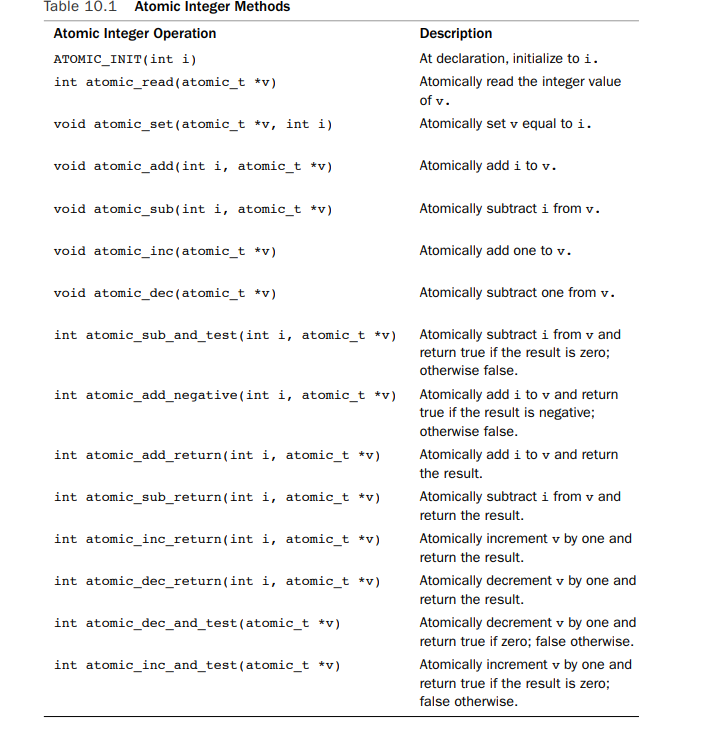
原子操作的实现大部分都是内联汇编指令实现的，对于读写操作，因为a word-size read and write本身就是atomic，所以就是简单的读写其中的int值就可以了，如下
static inline int atomic_read(const atomic_t *v)
{
return v->counter;
}
static inline void atomic_set(atomic_t *v, int i)
{
v->counter = i;
}
对于其他操作，比如atomic_add,atomic_sub,atomic_sub_and_test,都涉及到了RMW这类指令，在x86上这些操作的实现如下
static inline void atomic_add(int i, atomic_t *v)
{
asm volatile(LOCK_PREFIX "addl %1,%0"
: "=m" (v->counter)
: "ir" (i), "m" (v->counter));
}
static inline void atomic_sub(int i, atomic_t *v)
{
asm volatile(LOCK_PREFIX "subl %1,%0"
: "=m" (v->counter)
: "ir" (i), "m" (v->counter));
}
static inline int atomic_sub_and_test(int i, atomic_t *v)
{
unsigned char c;
asm volatile(LOCK_PREFIX "subl %2,%0; sete %1"
: "=m" (v->counter), "=qm" (c)
: "ir" (i), "m" (v->counter) : "memory");
return c;
}
在x86上原子指令的使用是通过给RMW类指令添加lock前缀。RMW类指令包括ADD, ADC, AND, BTC, BTR, BTS, CMPXCHG, CMPXCH8B, DEC, INC, NEG, NOT, OR, SBB, SUB, XOR, XADD, and XCHG
最后的atomic_sub_and_test函数中asm volatile ("" : : : "memory")是编译器memory fence,确保之前指令的读写顺序，这里应该是确保sete xx在lock subl xx之后执行。另外这里之所以只需要编译器memroy barrier,因为在x86架构下，all stores have a release fence and all loads have an acquire fence.所以在x86架构下，对于memory barrier只需要使用编译器memory barrier就可以了。另外不管哪种体系结构实现的atomic RMW操作，其中的read和write肯定是保证顺序的。
gcc关于extended asm的说明文档如下 https://gcc.gnu.org/onlinedocs/gcc/Extended-Asm.html，有时间再看吧。。。
关于volatile限定符和 complier memory barrier的使用，可以看看https://stackoverflow.com/questions/26456510/what-does-asm-volatile-do-in-c 这里的讨论。
64-Bit Atomic Operation
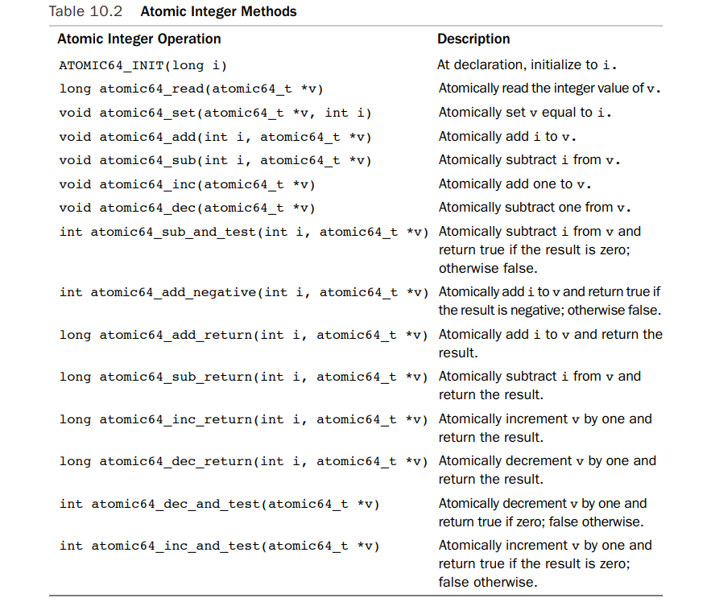
Atomic Bitwise Operations atomic bitwise operations也是 architecture-specific,定义在
文件中。 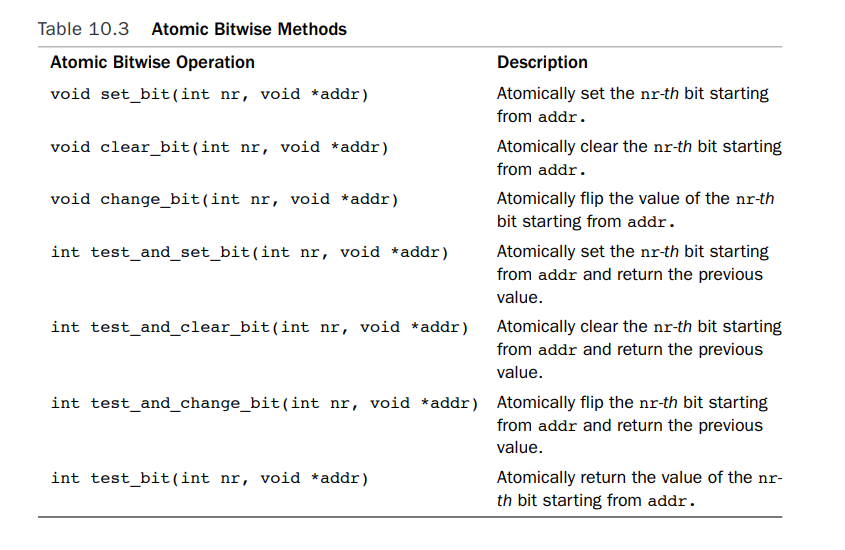
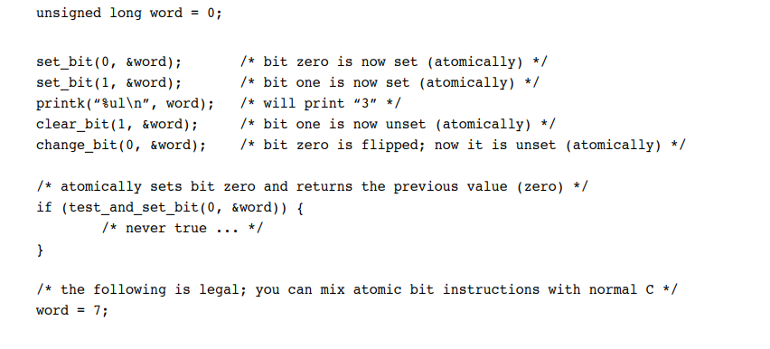
Spin Lock
当thread of execution 试图获取spin lock时，如果锁已经被获取了，则当前thread of execution 会busy loop/spin, 不断的循环查看当前锁的状态。这其实是在 wasting the processor time,因此，spin lock锁持有的时间应该越短越好。
spin lock的实现也是architecture-dependent. architecture-dependent code defined in
DEFINE_SPINLOCK(mr_lock);
spin_lock(&mr_lock);
/* critical region...*/
spin_unlock(&mr_lock);
其实现主要是获取锁会preempt disable,然后使用atomic操作获取锁，而在up系统上，只有preemption disable和enable，并没有atomic操作。如果preempt 被配置为off，则在up系统上，整个spin lock的获取和释放是无操作的。
preempt disable是为了防止持有锁的线程被抢占。导致持有锁的时间过长。因为如果锁被持有时过长，其他尝试获取锁的线程将会浪费大量的CPU时间进行忙等待。自旋锁通常用于保护短时间内可以完成的操作。 而RMW类的原子操作，则是在多核环境下，确保当锁被一个核心持有时，其他核心上的线程不会读取的数据不一致，导致同时持有。
如果在中断处理例程中也需要访问临界资源，通常在获取自旋锁时，都会先disable interrupt。否则如果在当前routine中获取了自旋锁，在临界区中被中断打断，中断处理中也试图获取自旋锁，则就造成死锁。
linux kernel 提供的 spin lock are not recursive。 如果自己已经获得锁了，再次试图获取锁会dead lock.
spin lock因为在获取锁失败时只是spin,而不会像semaphore一样sleep,故而spin lock可以用于 interrupt handler/ bottom halves，即可用于interrupt context中。
内核提供了既可以disables interrutps 也可以 acquires the lock的接口，如下
DEFINE_SPINLOCK(mr_lock);
unsigned long flags;
spin_lock_irqsave(&mr_lock,flags);
/* critical region */
spin_unlock_irqrestore(&mr_lock,flags);
或者如下，这种适用于本身就知道local interrupt are enabled,无需保存其原先状态。
spin_lock_irq(&mr_lock);
spin_unlock_irq(&mr_lock);
其他spin lock 方法
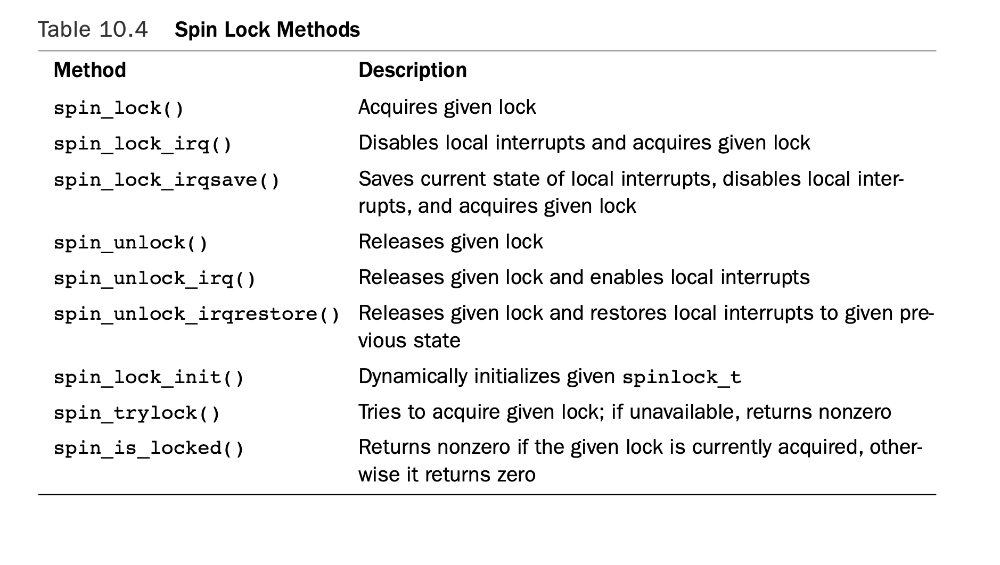
如果process context code 与bottom half共享数据，则在使用spin lock时需要在process context code中disable bottom half
spin_lock_bh()//disables local bottom halves processing and obtain the lock
spin_unlock_bh() //release the lock and enable local bottom halves processing
如果bottom havles与interrupt handler共享数据，则需要在bottom halves中disable local interrupt,接口如之前所示。
reader-writer spin lock
DEFINE_RWLOCK(mr_lock);
read_lock(&mr_rwlock);
/*critical section(read only)*/
read_unlock(&mr_rwlock);
write_lock(&mr_rwlock);
/*critical section(read and write)*/
write_unlock(&mr_lock);
read section and write section 是分开的，不能在read section中写，写之前试图将锁升级为write lock,如下代码会导致死锁。write lock在试图获取锁时会spin,等待read 解锁。
read_lock(&mr_rwlock);
write_lock(&mr_rwlock);
read lock可以多个readers获取，单独的reader也可多次获取read lock,即read lock是recursive的。
如果在interrupt handler中只是对共享数据是只读的，则可以只用read_lock,而不用disable local interrupt. 如果对共享数据有写操作，则需要disable local interrupt.
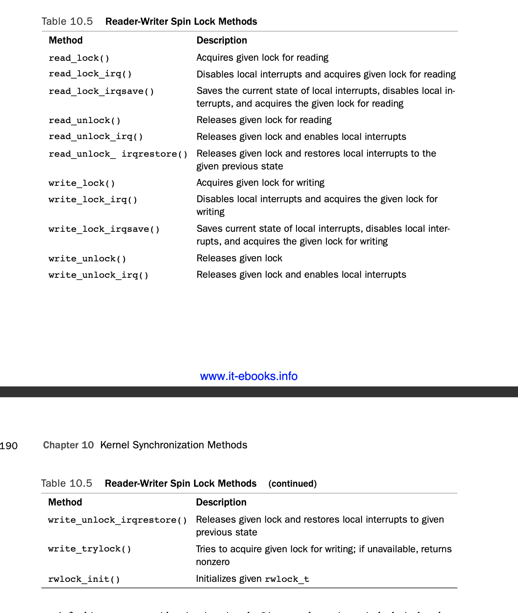
最后需要注意的是linux kernel提供的reader-writer spin lock 是favor reader over writer. 如果读锁被获取，有写锁被等待，后续的读锁依然可以继续获取成功，写锁只有等到所有的读锁都释放之后才能获取成功。这种设计有可能导致大量的读操作starve pending writers.
spin lock在获取锁失败时 busy loop, 不会休眠，这种锁适用于锁的持有时间很短的critical section,比如interrupt handler中。对于锁的持有时间可能很长，比如在持有锁时可能会sleep的critical section而言,需要使用semaphore.
Semaphores
semaphore是会休眠的锁，当获取锁失败时，semaphore会将该进程的状态切换为TASK_INTERRUPTIBLE或者TASK_UNINTERRUPTIBLE状态并放入等待队列中，然后切换别的进程运行。当semaphore被释放时，如果有进程在等待队列中等待，则某个进程会被唤醒，放入就绪队列中
- semaphore适用于会持有锁很长时间的critical section
- 如果持有锁的时间很短，则semaphore的sleeping, switch, maintaining the wait queue, switching back这些操作outweigh the total lock hold time
- semaphore只能使用在process context,interrupt context是不可schedule的。
- 获取semaphore后，在critical section中是可以sleep的，即使切换到别的进程再次获取semaphore失败，那个进程也会sleep，最终会调度到自己运行直到释放锁
- semaphore 不会disable kernel preemption.
- 可以允许多个进程持有semaphore
semaphore 的实现是architecture-dependent,在
struct semaphore name;
sema_init(&name,count);
如果要创建binary semaphore(只允许一个进程持有)，如下
static DECLARE_MUTEX(name);
struct semaphore在x86下的实现如下所示
struct semaphore {
atomic_t count;
int sleepers;
wait_queue_head_t wait;
};
static inline void sema_init (struct semaphore *sem, int val)
{
atomic_set(&sem->count, val);
sem->sleepers = 0;
init_waitqueue_head(&sem->wait);
}
#define __SEMAPHORE_INITIALIZER(name, n) \
{ \
.count = ATOMIC_INIT(n), \
.sleepers = 0, \
.wait = __WAIT_QUEUE_HEAD_INITIALIZER((name).wait) \
}
#define __DECLARE_SEMAPHORE_GENERIC(name,count) \
struct semaphore name = __SEMAPHORE_INITIALIZER(name,count)
#define DECLARE_MUTEX(name) __DECLARE_SEMAPHORE_GENERIC(name,1)
dwon_interruptible()试图获取semaphore，如果失败，process sleep in the TASK_INTERRUPTIBLE状态。如果该进程被信号提前唤醒，则返回-ENTR。dwon()在获取semaphore失败时将sleep in TASK_UNINTERRUPTIBLE状态。down_trylock()试图获取semaphore，如果获取失败，函数立即返回nonzero.否则返回zero并获取成功。up释放semaphore
static DECLARE_MUTEX(mr_sem);
if(down_interruptible(&mr_sem)){
/*signal received, semaphore not acquired...*/
}
/*critical region*/
up(&mr_sem);
在x86下的实现如下
//其中的__down_failed_interruptible,__up_wakeup都是直接汇编写的，定义在semaphre_32.S文件中
static inline int down_interruptible(struct semaphore * sem)
{
int result;
might_sleep();
__asm__ __volatile__(
"# atomic interruptible down operation\n\t"
"xorl %0,%0\n\t"
LOCK_PREFIX "decl %1\n\t" /* --sem->count */
"jns 2f\n\t" //jump if not signed ,这里就是获取到了semaphore
"call __down_failed_interruptible\n" //signed,没有获取到semaphore,这里sleep
"2:\n"
:"=&a" (result), "=m" (sem->count)
:"D" (sem)
:"memory");
return result;
}
static inline void up(struct semaphore * sem)
{
__asm__ __volatile__(
"# atomic up operation\n\t"
LOCK_PREFIX "incl %0\n\t" /* ++sem->count */
"jg 1f\n\t" //jump if greater than zero,就是指没有进程在等待semaphore
"call __up_wakeup\n" //less or equal to zero,有进程在等待semaphore,唤醒
"1:"
:"=m" (sem->count)
:"D" (sem)
:"memory");
}
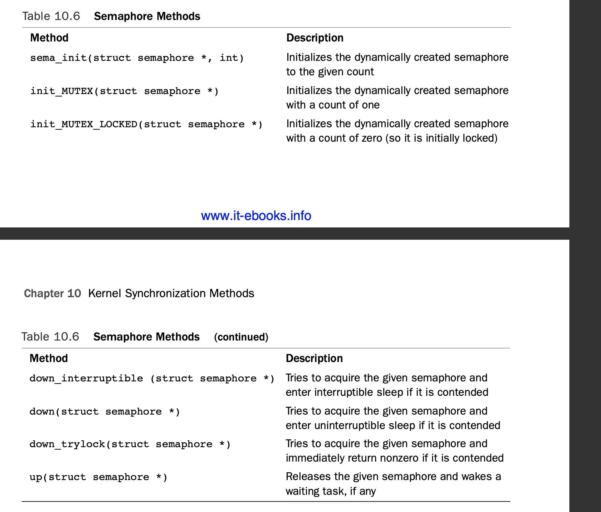
reader-writer semaphore
kernel提供了struct rw_semaphore定义rw semaphore.
创建并初始化
//静态创建并初始化
static DECLARE_RWSEM(name);
//动态初始化
init_rwsem(struct rw_semaphore *sem);
rw semaphore 的usage count是1，但只enforce mutual exclusion only for writers, not readers，并且获取失败时只有uninterruptible sleep,不会因信号提前返回。
static DECLARE_RWSEM(mr_rwsem);
down_read(&mr_rwsem);
/*critical region for read only*/
up_read(&mr_rwsem);
/*...*/
down_write(&mr_rwsem);
/*critical region for read and write*/
up_write(&mr_rwsem);
down_read_trylock,down_write_trylock获取失败直接返回，不会sleep
Mutexes
linux kernel 提供了 struct mutex结构体来实现mutual exclusive sleep lock,它跟semaphore with a count of one相似，但是有simpler interface, more effcient performance, and addtional constraints on its use. 创建
DEFINE_MUTEX(name);
初始化
mutex_init(&mutex);
locking and unlocking
mutex_lock(&mutex);
/*critical region*/
mutex_unlock(&mutex);
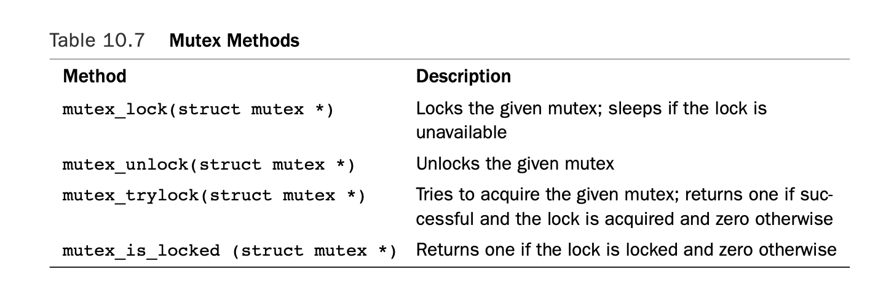
mutex 相比semaphore所添加的constraints:
- 只有一个进程能获取mutex,useage count on a mutex is always one.
- 释放mutex的进程也必须是获取mutex的那个进程
- recursive locks and unlocks are not allowed
- a process cannot exit while holding a mutex
- a mutex cannot be acquired by an interrupt handler or bottom half,even with mutex_trylock()
- a mutex can be managed only via the official API
当内核编译时配置了CONFIG_DEBUG_MUTEXES时，很多debugging checks会确保这些contraints被满足。
semaphore versus mutexes 只有当mutexes的某个contraints不能满足你的使用要求时，才使用semaphore，否则尽可能使用mutexes
spin locks versus mutexes only spin lock can be held under interrupt context.
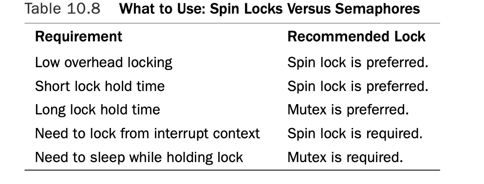
mutexes的定义如下
/*
* Simple, straightforward mutexes with strict semantics:
*
* - only one task can hold the mutex at a time
* - only the owner can unlock the mutex
* - multiple unlocks are not permitted
* - recursive locking is not permitted
* - a mutex object must be initialized via the API
* - a mutex object must not be initialized via memset or copying
* - task may not exit with mutex held
* - memory areas where held locks reside must not be freed
* - held mutexes must not be reinitialized
* - mutexes may not be used in hardware or software interrupt
* contexts such as tasklets and timers
*
* These semantics are fully enforced when DEBUG_MUTEXES is
* enabled. Furthermore, besides enforcing the above rules, the mutex
* debugging code also implements a number of additional features
* that make lock debugging easier and faster:
*/
struct mutex {
/* 1: unlocked, 0: locked, negative: locked, possible waiters */
atomic_t count;
spinlock_t wait_lock;
struct list_head wait_list;
};
/*
* This is the control structure for tasks blocked on mutex,
* which resides on the blocked task's kernel stack:
*/
struct mutex_waiter {
struct list_head list;
struct task_struct *task;
};
Completion Variables
结构体，创建，初始化如下
struct completion
DECLARE_COMPLETION(mr_comp);
init_completion(struct completion * mr_comp);
接口如下
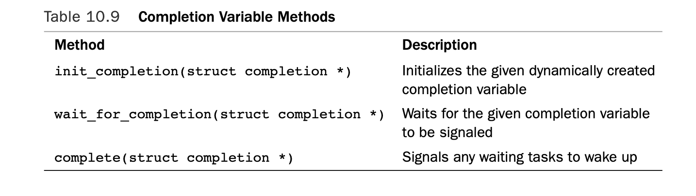
实现如下struct completion {
unsigned int done; //初始化为0
wait_queue_head_t wait;
};
static inline void init_completion(struct completion *x)
{
x->done = 0;
init_waitqueue_head(&x->wait);
}
void __sched wait_for_completion(struct completion *x)
{
wait_for_common(x, MAX_SCHEDULE_TIMEOUT, TASK_UNINTERRUPTIBLE); //MAX_SCHEDULE_TIMEOUT: LONG_MAX
}
static long __sched
wait_for_common(struct completion *x, long timeout, int state)
{
might_sleep();
spin_lock_irq(&x->wait.lock);
timeout = do_wait_for_common(x, timeout, state);
spin_unlock_irq(&x->wait.lock);
return timeout;
}
static inline long __sched
do_wait_for_common(struct completion *x, long timeout, int state)
{
if (!x->done) {
DECLARE_WAITQUEUE(wait, current);
wait.flags |= WQ_FLAG_EXCLUSIVE;
__add_wait_queue_tail(&x->wait, &wait);
do {
if (state == TASK_INTERRUPTIBLE &&
signal_pending(current)) {
__remove_wait_queue(&x->wait, &wait);
return -ERESTARTSYS;
}
__set_current_state(state);
spin_unlock_irq(&x->wait.lock);
timeout = schedule_timeout(timeout);
spin_lock_irq(&x->wait.lock);
if (!timeout) {
__remove_wait_queue(&x->wait, &wait);
return timeout;
}
} while (!x->done);
__remove_wait_queue(&x->wait, &wait);
}
x->done--;
return timeout;
}
void complete(struct completion *x)
{
unsigned long flags;
spin_lock_irqsave(&x->wait.lock, flags);
x->done++;
__wake_up_common(&x->wait, TASK_UNINTERRUPTIBLE | TASK_INTERRUPTIBLE,
1, 0, NULL);
spin_unlock_irqrestore(&x->wait.lock, flags);
}
/*
* The core wakeup function. Non-exclusive wakeups (nr_exclusive == 0) just
* wake everything up. If it's an exclusive wakeup (nr_exclusive == small +ve
* number) then we wake all the non-exclusive tasks and one exclusive task.
*
* There are circumstances in which we can try to wake a task which has already
* started to run but is not in state TASK_RUNNING. try_to_wake_up() returns
* zero in this (rare) case, and we handle it by continuing to scan the queue.
*/
static void __wake_up_common(wait_queue_head_t *q, unsigned int mode,
int nr_exclusive, int sync, void *key)
{
wait_queue_t *curr, *next;
list_for_each_entry_safe(curr, next, &q->task_list, task_list) {
unsigned flags = curr->flags;
if (curr->func(curr, mode, sync, key) &&
(flags & WQ_FLAG_EXCLUSIVE) && !--nr_exclusive)
break;
}
}
其使用可见于kernel/sched.c 和kernel/fork.c文件中。A common usage is to have a completion variable dynamically created as a member of a data structure. Kernel code waiting for the initialization of the data structure calls wait_for_completion().When the initialization is complete, the waiting tasks are awakened via a call to complete().
Sequential Locks
typedef struct {
unsigned sequence; //unsigned int
spinlock_t lock;
} seqlock_t;
#define DEFINE_SEQLOCK(x) \
seqlock_t x = __SEQLOCK_UNLOCKED(x)
#define __SEQLOCK_UNLOCKED(lockname) \
{ 0, __SPIN_LOCK_UNLOCKED(lockname) }
/* Lock out other writers and update the count.
* Acts like a normal spin_lock/unlock.
* Don't need preempt_disable() because that is in the spin_lock already.
*/
static inline void write_seqlock(seqlock_t *sl)
{
spin_lock(&sl->lock);
++sl->sequence;
smp_wmb();
}
static inline void write_sequnlock(seqlock_t *sl)
{
smp_wmb();
sl->sequence++;
spin_unlock(&sl->lock);
}
/* Start of read calculation -- fetch last complete writer token */
static __always_inline unsigned read_seqbegin(const seqlock_t *sl)
{
unsigned ret = sl->sequence;
smp_rmb();
return ret;
}
/* Test if reader processed invalid data.
* If initial values is odd,
* then writer had already started when section was entered
* If sequence value changed
* then writer changed data while in section
*
* Using xor saves one conditional branch.
*/
static __always_inline int read_seqretry(const seqlock_t *sl, unsigned iv)
{
smp_rmb();
return (iv & 1) | (sl->sequence ^ iv);
}
对 seq lock的说明如下
/*
* Reader/writer consistent mechanism without starving writers. This type of
* lock for data where the reader wants a consistent set of information
* and is willing to retry if the information changes. Readers never
* block but they may have to retry if a writer is in
* progress. Writers do not wait for readers.
*
* This is not as cache friendly as brlock. Also, this will not work
* for data that contains pointers, because any writer could
* invalidate a pointer that a reader was following.
*
* Expected reader usage:
* do {
* seq = read_seqbegin(&foo);
* ...
* } while (read_seqretry(&foo, seq));
*
*
* On non-SMP the spin locks disappear but the writer still needs
* to increment the sequence variables because an interrupt routine could
* change the state of the data.
*
* Based on x86_64 vsyscall gettimeofday
* by Keith Owens and Andrea Arcangeli
*/
jiffies，the variable that stores a Linux machine's uptime use seq lock. Jiffies holds a 64-bit count of the number of clock ticks since the machine booted. On machines that cannot atomically read the full 64-bit jiffies_64 variable, get_jiffies_64() is implemented using seq locks:
u64 get_jiffies_64(void){
unsigned long seq;
u64 ret;
do{
seq=read_reqbegin(&xtime_lock);
ret=jiffies_64;
}while(read_reqretry(&xtime_lock,seq));
return ret;
}
Updating jiffies during the timer interrupt, in turns, grabs the write variant of the seq lock:
write_seqlock(&xtime_lock);
jiffies_64+=1;
write_sequnlock(&xtime_lock);
Preemption Disabling
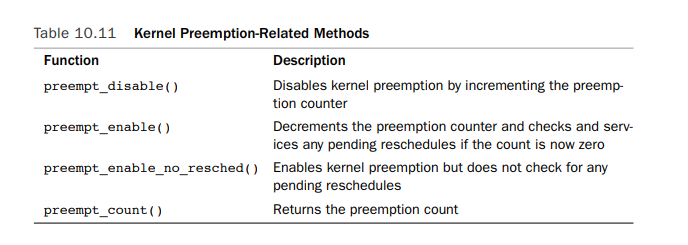
其实现在linux/preempt.h文件中，如下#define preempt_count() (current_thread_info()->preempt_count)
# define add_preempt_count(val) do { preempt_count() += (val); } while (0)
# define sub_preempt_count(val) do { preempt_count() -= (val); } while (0)
#define inc_preempt_count() add_preempt_count(1)
#define dec_preempt_count() sub_preempt_count(1)
#define preempt_disable() \
do { \
inc_preempt_count(); \
barrier(); \
} while (0)
#define preempt_enable_no_resched() \
do { \
barrier(); \
dec_preempt_count(); \
} while (0)
#define preempt_check_resched() \
do { \
if (unlikely(test_thread_flag(TIF_NEED_RESCHED))) \
preempt_schedule(); \
} while (0)
#define preempt_enable() \
do { \
preempt_enable_no_resched(); \
barrier(); \
preempt_check_resched(); \
} while (0)
我们在获取spinlock时，会调用preempt_disable(),在释放spinlock后，会调用preempt_enable(); 对于per-processor data,因为不会在多个cpu上并发访问，故而不需要使用锁，只需要disable preempt来避免pesudo-concurrency。 get_cpu()会disable kernel preemption, put_cpu() reenable kernel preemption
#define get_cpu() ({ preempt_disable(); smp_processor_id(); })
#define put_cpu() preempt_enable()
使用如下
int cpu;
/*disable kernel preemption and set "cpu" to the current processor*/
cpu=get_cpu();
/*manipulate per-processor data..*/
/* reenable kernel preemption, "cpu" can change and so is no longer valid*/
put_cpu();